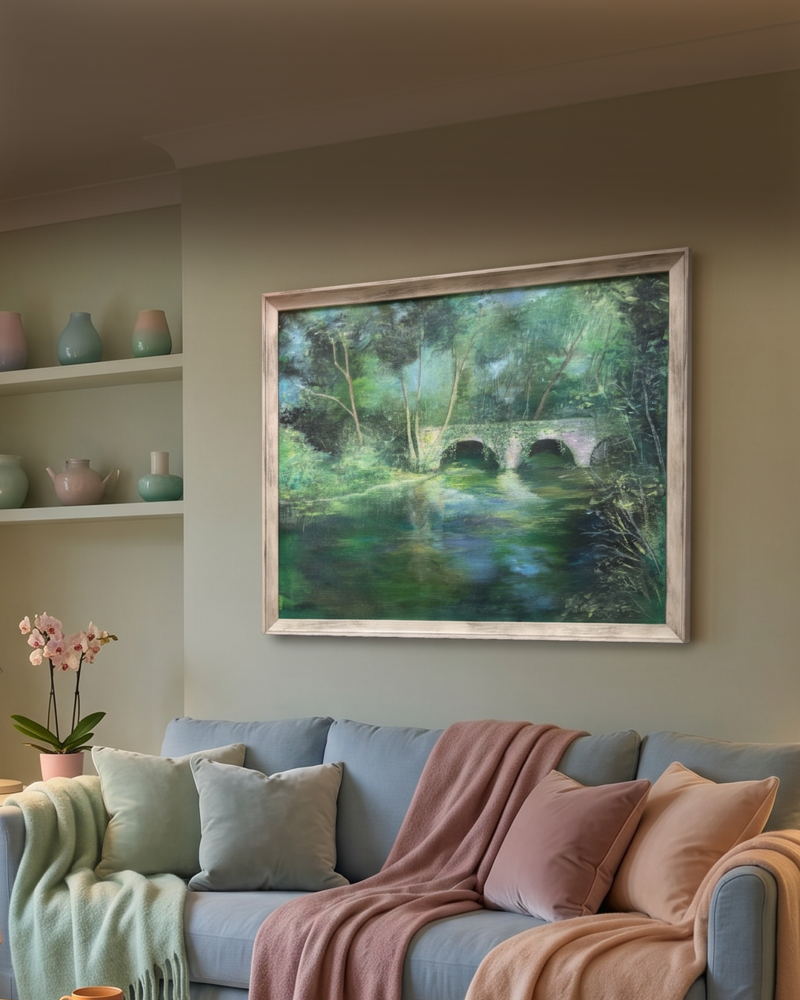
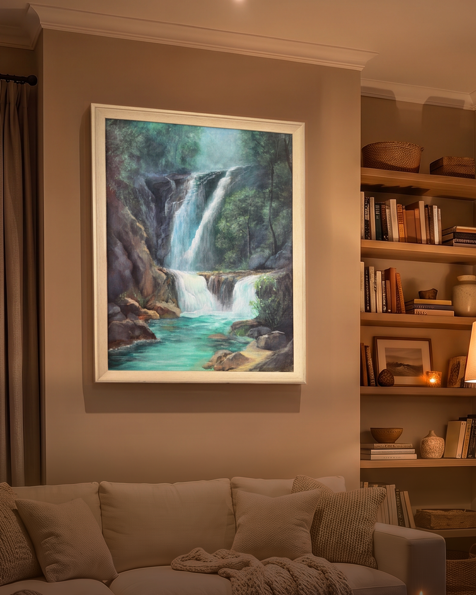
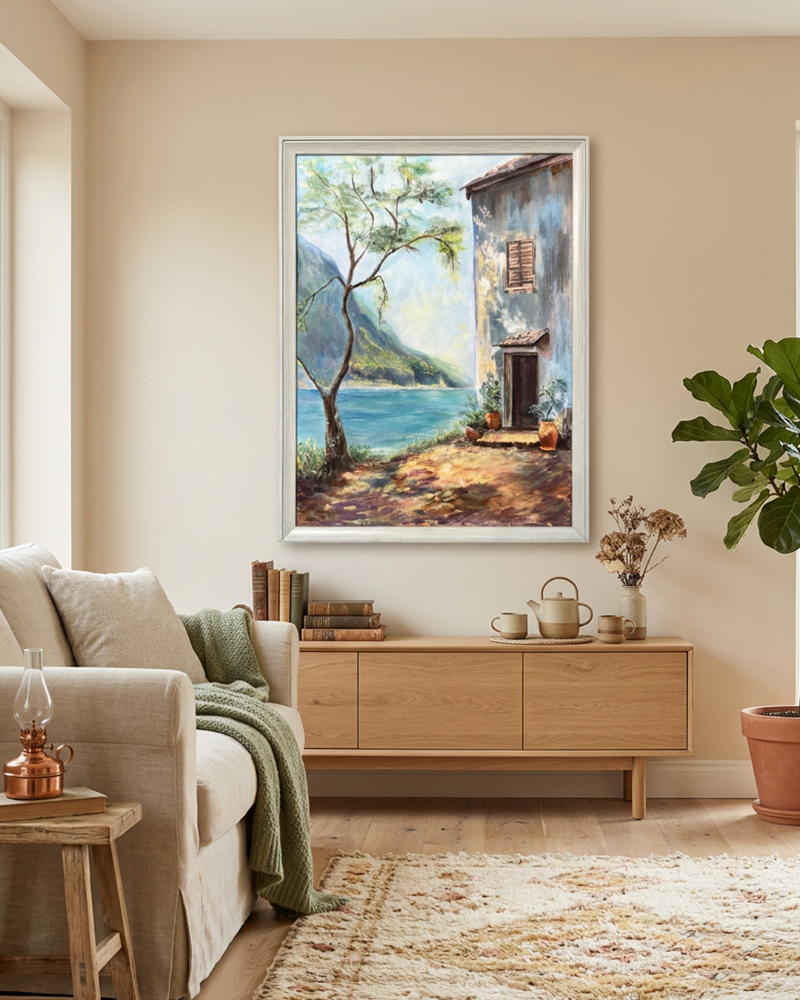
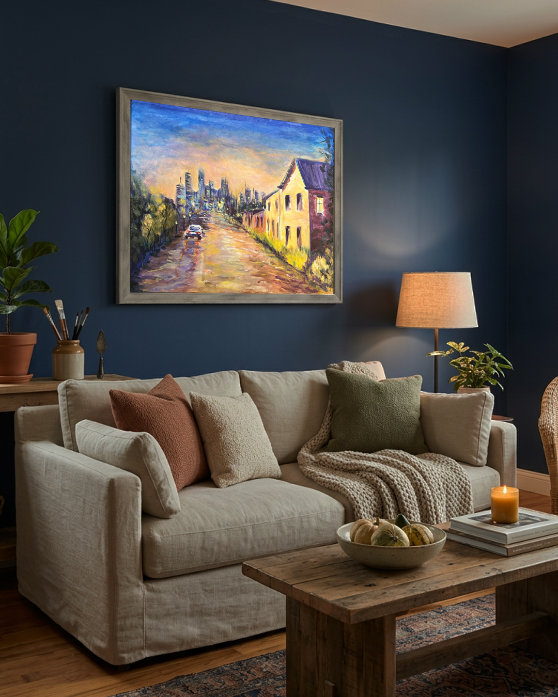

Final Framing01 / Enchanted Forest
A quiet summer moment hidden within an enchanted forest. Sunlight dances across the greenery, creating a fleeting moment where time seems to stand still.

Final FramingA quiet summer moment hidden within an enchanted forest. Sunlight dances across the greenery, creating a fleeting moment where time seems to stand still.

Final FramingThis painting was built around two visual goals: guiding the viewer’s eye upward into the misty distance and creating a sense of depth through contrast.

Final FramingThe goal of this painting was to capture an airy Mediterranean atmosphere rather than pursue photorealism.

Final piece framedExploring cityscapes through expressive brushwork, one-point perspective, and the interplay of light and atmosphere to capture a rainy sunset.